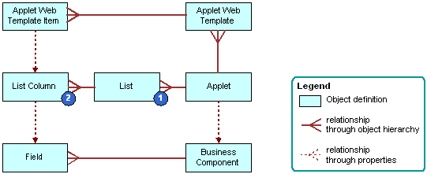

How Siebel CRM Creates a List Applet
A list applet is a type of applet that displays multiple records at one time. It includes the following qualities:
-
Uses multiple columns to display data in table format. Each row of the table represents a record from the business component that the applet references.
-
Allows the user to scroll through multiple records of data and view several fields for each record.
-
Associated with a single business component.
-
A list column creates a relationship between the business component field and the applet web template item.
The following figure describes how Siebel CRM creates a list applet. Siebel CRM creates a list applet in a way that is similar to how it creates a form applet. For more information, see How Siebel CRM Creates a Form Applet. For background information, see Hierarchy of Object Types and Relationships.
Explanation of Callouts
Siebel CRM uses the following objects to create a list applet:
-
List. Includes properties that affect the list. It works as a parent object for all the list columns in the applet. A list applet includes one list object definition, named List.
-
List column. Identifies one column in the list. It references one field in the business component.
For more information, see About Applet Controls and List Columns.